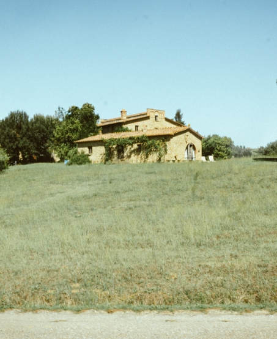
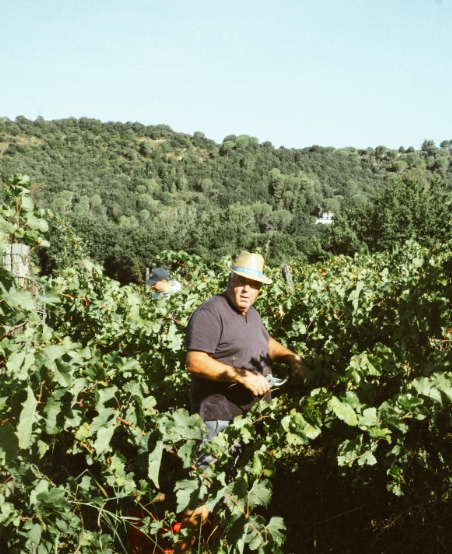
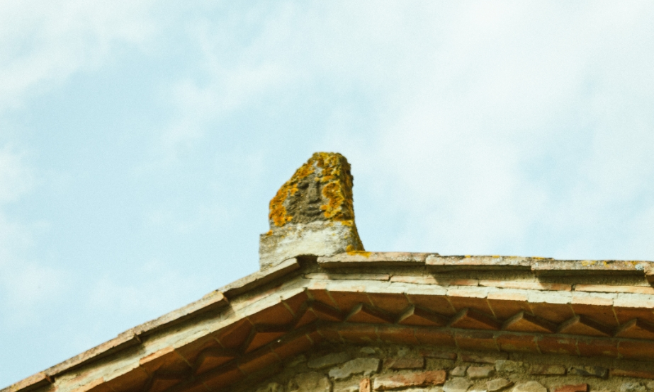
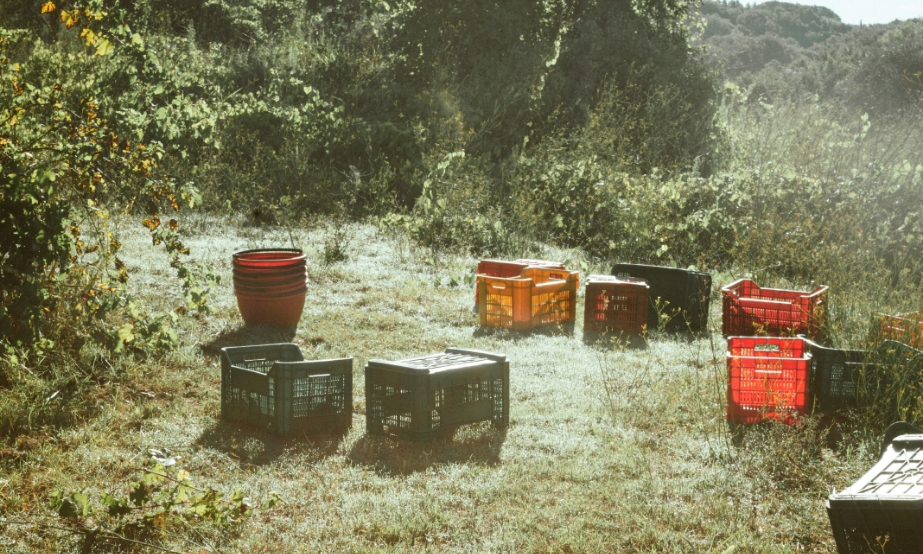
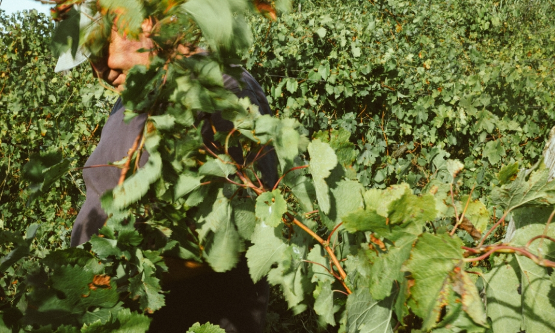
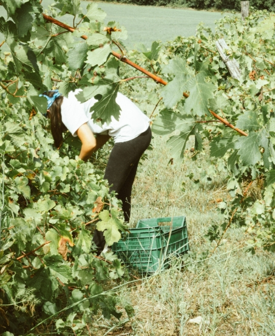
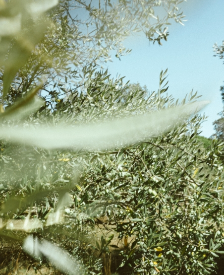
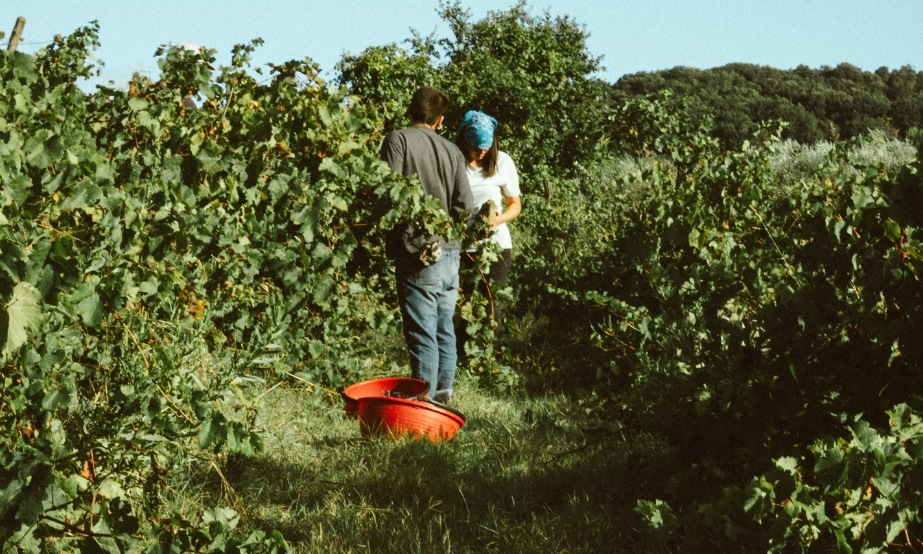

Antica Fattoria San Giovanni è un luogo che crea connessioni, unisce persone con la voglia di far crescere culturalmente la nostra terra. È la perfetta gita fuori porta per gli amanti del buon bere.Vino, natura e cultura si fondono col suono del mare in sottofondo.
Fattoria San Giovanni è un progetto per connettere le persone.
Fattoria San Giovanni crea un luogo di appartenenza.
Fattoria San Giovanni è un luogo dove sperimentare.
Fattoria San Giovanni è un laboratorio.
Fattoria San Giovanni è relazioni.
Fattoria San Giovanni è una cura.
Buon Bere e Cultura
Antica Fattoria San Giovanni è un luogo che crea connessioni.Vino, natura e cultura si fondono col suono del mare in sottofondo. Uniamo persone con la voglia di far cresce culturalmente la nostra terra. Un antico casolare sulle colline di Montescudaio, in Val Cecina. Una famiglia appassionata e amante del buon vino e dell’olio genuino. Da questi elementi nasce l’esperienza di Antica Fattoria San Giovanni: vini fatti per cantare.







